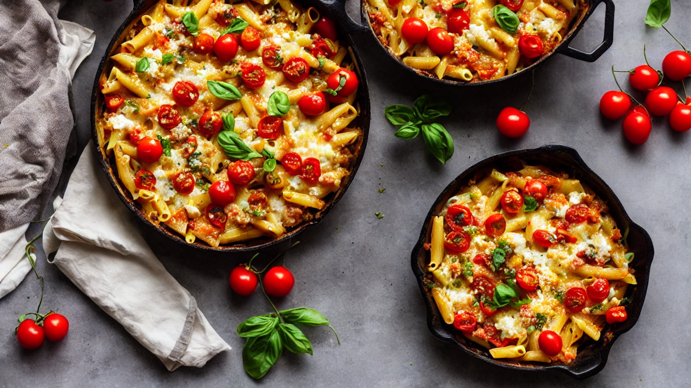
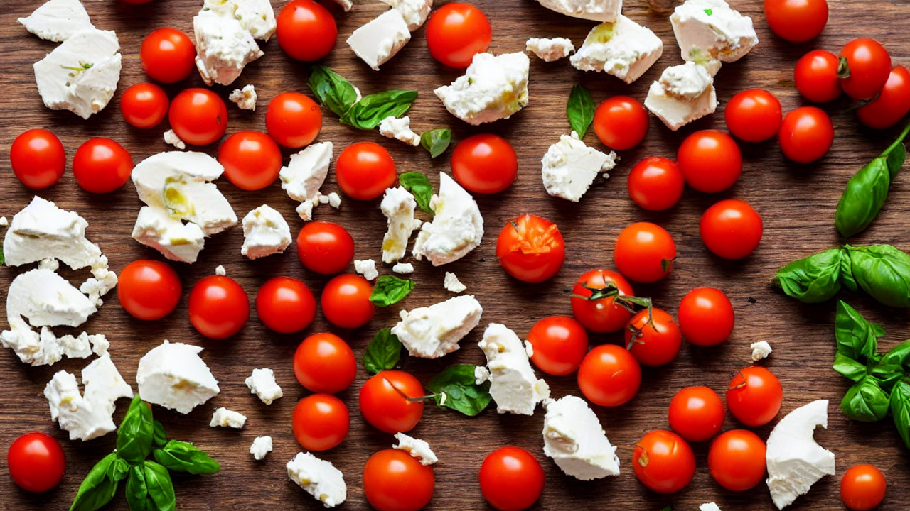
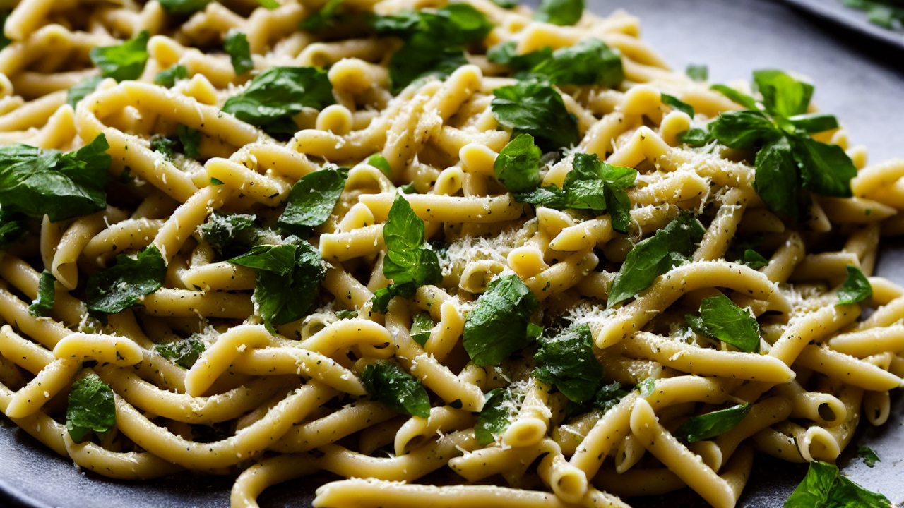
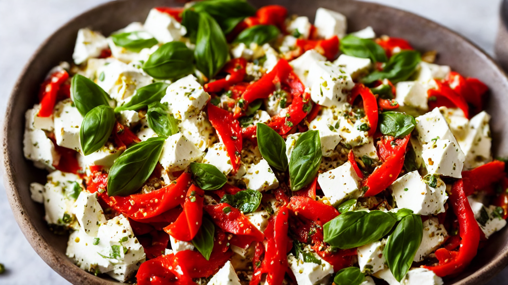
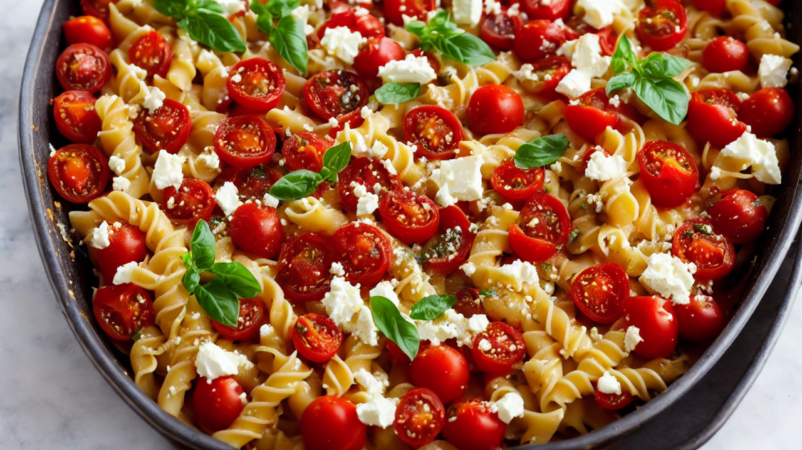
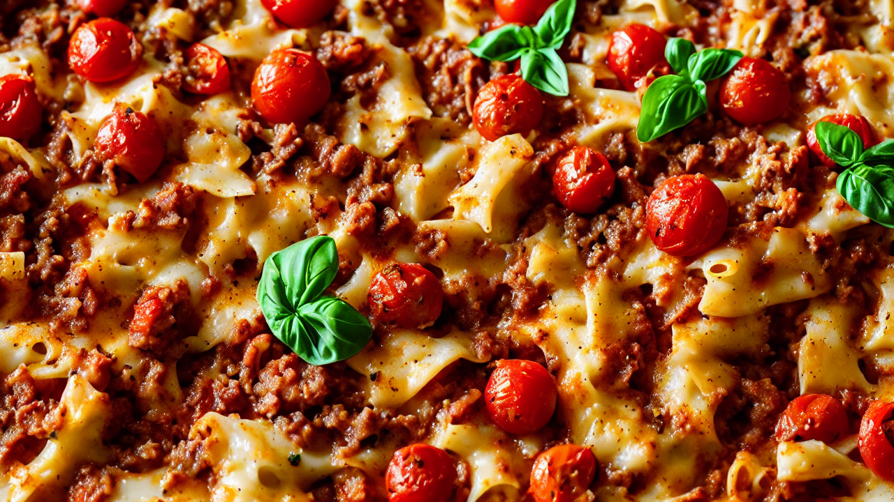
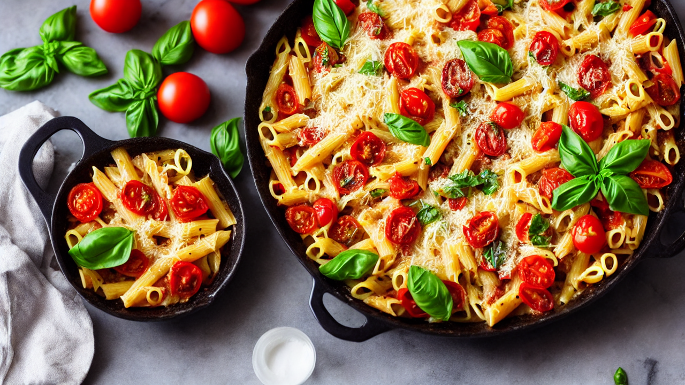

Creamy Baked Feta Pasta with Cherry Tomatoes | Quick & Easy Weeknight Dinner
Discover this creamy baked feta pasta recipe with juicy cherry tomatoes! Perfect for a fast, flavorful meal. Easy to make with fresh ingredients. Ideal for pasta lovers and dinner ideas!
Ingredients
- your ingredients: pasta
- feta
- cherry tomatoes
- garlic
- olive oil
- herbs
- Parmesan
- Everything you need is in one grocery trip!
Instructions

Welcome to a creamy, cheesy pasta masterpiece! Today’s baked feta pasta with cherry tomatoes is rich, cheesy, and packed with summer vibes. Let’s make it!

Grab your ingredients: pasta, feta, cherry tomatoes, garlic, olive oil, herbs, and Parmesan. Everything you need is in one grocery trip!

Cook pasta according to package instructions. Drain and toss with a splash of olive oil to prevent sticking. Set aside for the next step!

In a bowl, mix crumbled feta, chopped garlic, fresh basil, and a pinch of red pepper flakes. Season with salt and pepper for bold flavor!

Layer pasta in a baking dish, then spread the feta mixture over the top. Add halved cherry tomatoes for a burst of sweetness and color!

Bake at 375°F (190°C) for 20-25 minutes until bubbly and golden. Let rest for 5 minutes before serving for the perfect creamy texture!

Sprinkle with extra Parmesan and fresh basil before serving. This dish is pure comfort—grab your fork and dig in! Don’t forget to subscribe for more recipes!
Recommended Kitchen Essentials
Every great recipe starts with great tools. Here are our top picks to make cooking easier and more enjoyable:
Support Quick Bites Kitchen — When you purchase through our links, we may earn a small commission at no extra cost to you. This helps us keep creating free recipes for everyone. Thank you!